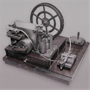
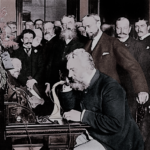
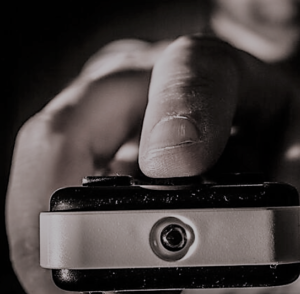
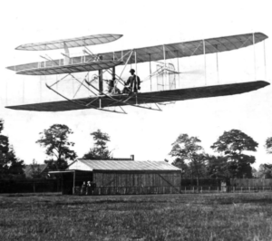
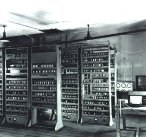
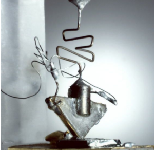
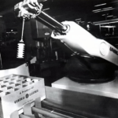

de la educación. Gracias a la reproducción de textos e imágenes en masa, la cultura y la información
pudo empezar a distribuirse por todas las escalas de la sociedad.

- El telégrafo (1835)
- Morse desarrolló el primer telégrafo, el primer medio de comunicación instantánea y
considerado el predecesor de Internet. Es la primera tecnología que permitió la transmisión de información
codificada mediante señales eléctricas. Supuso una gran revolución en las telecomunicaciones, lo que dio origen
a la era de la información. - El teléfono (1876)
- Alejandro Graham Bell nos dio la posibilidad de comunicarnos con nuestra propia voz a distancia. No fue
hasta el siglo XX cuando la red telefónica se empezó a extender por las ciudades. - El control remoto (1898)
- Nikola Tesla, ingeniero eléctrico y mecánico serbio, desarrolló uno de los primeros mandos a distancia
en 1898, el cual contaba únicamente con 3 funciones: encendido, apagado y pausa. Esta tecnología se
extendió a todos los ámbitos: industria, militar, electrónica, etc. Significó una revolución en la
transmisión de la información a través de la emisión y recepción de señales infrarrojas. - El avión (1903)
- Los hermanos Wright consiguieron acortar las distancias entre los distintos puntos del globo
gracias a los viajes en avión, uno de los inventos tecnológicos más importantes de la historia. En 1952, se oficializó el
transporte de pasajeros. - El ordenador (1938)
- Konrad Zuse fue el ingeniero alemán que creó el primer ordenador moderno, el Z1, una calculadora
mecánica binaria que ocupaba toda una sala. Esto no hubiese sido posible sin las contribuciones de Charles Babbage, quién
sentó las bases de la computación a principios del siglo XIX; y de Alan Turing, quién formalizó los conceptos de algoritmo
y desarrolló la máquina de Turing, en 1936. - El transistor y la electrónica (1947)
- El primer transistor de la historia dio origen a la electrónica. John Bardeen, Walter Houser
Brattain y William Bradford Shockley son los físicos estadounidenses de los Bell Telephone Laboratories (actual AT&T),
considerados los padres del transistor, un componente microelectrónico que está en el centro de la revolución digital. - El robot industrial (1954)
- George Devol y Joseph Engelberger son los creadores del primer robot industrial, un brazo
hidráulico que levantaba cargas pesadas, el Unimate. Más tarde, lo vendieron a General Motors.






